1.1 Componentes internos
hardware são as partes físicas do próprio computador. Isso inclui a Unidade Central de Processamento (CPU), unidades de armazenamento, placas mãe, placas de vídeo, memória, etc. Outras partes extras chamados componentes ou dispositivos periféricos incluem o mouse, impressoras, modems, scanners, câmeras, etc. Para que todos esses componentes sejam usados apropriadamente dentro de um computador, é necessário que a funcionalidade de cada um dos componentes seja traduzida para algo prático..
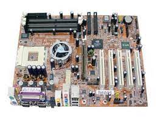1.1.1 CPU
A CPU ou o processador é o “cérebro” de todo computador e celular do planeta: trata-se do componente responsável por executar todas as operações necessárias para o funcionamento do dispositivo. Sem ele, não dá para fazer muita coisa no seu aparelho. Entenda a seguir o que é CPU e como ela funciona.
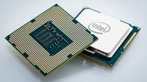1.1.2 Armazenamento
Uma unidade de disco rígido ou uma unidade de estado sólido retém todos os dados arquivos, fotos, programas, músicas e vídeos que o usuário quer guardar.
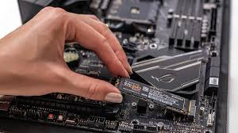1.1.3 Memória
A memória do computador ou a memória de acesso aleatório (RAM) é o armazenamento de dados de curto prazo do sistema. Ela armazena as informações que o computador está usando ativamente para que elas possam ser acessadas rapidamente. Quanto mais programas o sistema executar, mais memória você precisará.
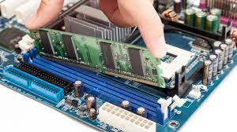1.1.4 Fonte de alimentação
As fontes de alimentação possuem função principal de transformar a corrente elétrica da rede, que chega em uma voltagem alta, para uma voltagem menor, que é a indicada para o hardware do computador
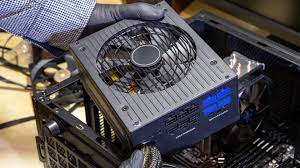1.2 Componentes externos
componentes externos são os periféricos utilizados para que o usuário consiga interagir com a máquina: monitor, teclado, Mouse, caixas de som, impressora...
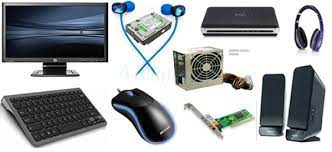1.2.1 teclado
O teclado é uma das principais ferramentas que usamos para interagir e introduzir dados no computador. A maioria dos teclados contam com pelo menos 5 grupos de teclas.
1.2.2 Monitor de vídeo
Um monitor é um dispositivo de saída do computador, cuja função é transmitir informação ao utilizador através da imagem. Porém são poucas as pessoas que se interessam por sua historia. Na década de 1950, a televisão ainda era novidade
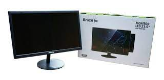1.2.3 Mouse
O mouse faz parte dos periféricos do seu computador e é a parte que no permite interagir com os objetos que aparecem na tela através de um cursor que podemos ver no monitor.
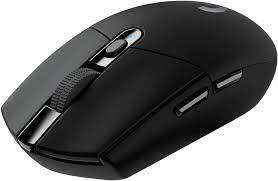1.2.4 Impressora
Periférico de saída de dados (output) que permite obter uma cópia em papel de dados contidos no computador. As impressoras são distinguidas quanto ao tipo de tecnologia usada na impressão. Existem impressoras de impacto e impressoras sem impacto, estas deixam marcas sem tocar no papel.
1.2.5 Plotter
A plotter é uma impressora que foi feita para imprimir trabalhos de qualidade em grandes dimensões, como por exemplo, mapas cartográficos, projetos de engenharia, gráficos e plantas arquitetônicas e podem utilizar diversos tipos de papel como papel comum, fotográfico, película, vegetal, autoadesivos, lonas e tecidos ...
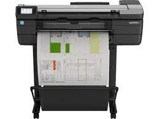1.1.6 Scanner
É um instrumento de captura, utilizado para digitalizar documentos, transformando documentos de papel em uma imagem digital.
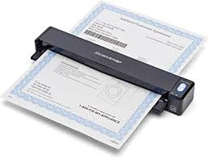1.2.7 Gabinete
Dentro do gabinete são encontrados os componentes que formam o computador propriamente dito, como as memórias, o processador e o disco rígido, todos eles estão direta ou indiretamente ligados à placa mãe
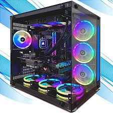1.2.8 Web Cam
Uma webcam é uma câmara de vídeo que está, em regra, ligada diretamente a um computador. É um dispositivo de hardware de entrada de sinal (input), cuja função é a captação de imagem e vídeo. Estes dispositivos podem ser usados para realizar videoconferência ou transmitir ininterruptamente determinados eventos.

1.2.9 Caixas de som
Caixas de som para PC são acessórios importantes para quem gosta de jogar, assistir filmes ou ouvir músicas no computador. No Brasil, marcas como Multilaser, Redragon e HP oferecem desde opções mais simples, de entrada, até modelos mais avançados, focados no público gamer

1.2.10 Microfone
Um Microfone Para Pc é um dispositivo que converte som em um sinal elétrico. Ele pode ser usado para gravar áudio ou para comunicação online através de programas como Skype, Google Hangouts e Yahoo Messenger.
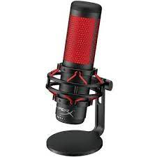1.2.11 Head Set
Os headsets são fones de ouvido que contam com um arco envolvendo a cabeça, os fones de ouvido e um microfone. Eles são muito utilizados por quem precisa se comunicar e atender pessoas enquanto realiza outras atividades.

1.3 Interfaces de entrada e saída
As interfaces de entrada e saída são responsáveis pela conexão entre as várias partes de um sistema computacional baseado na arquitetura de Von-Neumann.

1.3.2 Áudio
Placa de som para que serve Com o speaker do computador, a placa de som cria um sinal que é usado para produzir o som. O objetivo principal dos alto-falantes é oferecer saída de áudio para o usuário ouvinte.
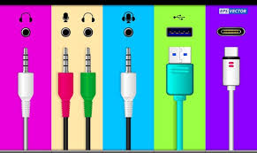1.3.3 Rede
Compartilhamento de arquivos: permite compartilhar arquivos de dados por meio de uma rede; Acesso e utilização de aplicativos: permite acessar e utilizar aplicações através da rede; Compartilhar hardware: possibilita aos usuários de uma rede compartilhar dispositivos de hardware, como impressoras e discos rígidos.
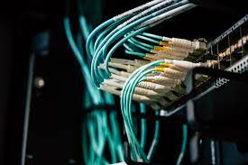1.3.4 VGA
O cabo VGA é uma das conexões mais antigas que ainda é utilizada nos computadores atuais. Possuindo a função primária de conectar o computador ao monitor, essa conexão está presente em alguns monitores mais moderno.
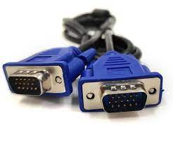1.3.5 HDMI
O HDMI, sigla para High-Definition Multimedia Interface, é um conector desenvolvido para compartilhar dados de vídeos e áudio entre dispositivos. É uma tecnologia que deve ser disponibilizada nos aparelhos eletrônicos diversos, como monitores, notebooks, computadores, TVs, projetores e muito mais.
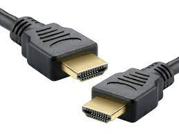1.3.6 USB
Ela corresponde ao termo Universal Serial Bus, que em tradução para o português quer dizer Porta Serial Universal. Em outras palavras, consiste em um tipo de cabo que se adapta a uma enorme quantidade de aparelhos diferentes.
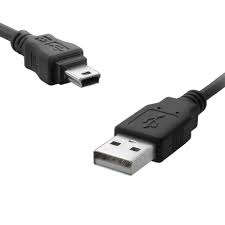2.GRANDEZAS ELÉTRICAS
- 2.1 Potência elétrica
- 2.2 Tensão elétrica
- 2.3 Corrente elétrica
2.1 Potência elétrica
A potência elétrica pode ser definida como a conversão de energia elétrica em outra energia útil ao ser humano. No caso do chuveiro, quanto maior a potência elétrica, maior a quantidade de calor que ele gera para aquecer a água.

2.2 Tensão elétrica
Tensão elétrica é a força elétrica que provoca a circulação de corrente, que faz as cargas elétricas entrarem em movimento. Quando entre dois corpos, ou entre dois pontos, existe uma diferença de quantidade de cargas, então dizemos que temos uma diferença de potencial elétrico (d.d.p) ou uma tensão elétrica.

2.3 Corrente elétrica
Corrente elétrica é o fenômeno físico em que os portadores de carga elétrica, como elétrons, são conduzidos pelo interior de algum material em razão da aplicação de uma diferença de potencial elétrico.

3 UNIDADES DE MEDIDA
-
UTILIZADAS NA INFORMÁTICA
- 3.1 Capacidade de armazenamento
- 3.1.1 bit
- 3.1.2 Byte
- 3.1.3 Múltiplos
- 3.2 Frequência
- 3.2.1 Hert
- 3.2.2 Múltiplos
- 3.3 Largura de banda
- 3.3.1 Capacidade do canal
- 3.3.2 bit/seg (bps)
- 3.3.3 Múltiplos
- 3.4 Taxa de transferência
- 3.4.1 Tráfego no canal
- 3.4.2 Byte/seg (Bps)
- 3.4.3 Múltiplosc
3.1 Capacidade de armazenamento
A capacidade de armazenamento de um dispositivo é a sua característica que especifica a quantidade máxima de informação que pode conter. Dispositivo Unidade Valor atual Disquete 3 1/2" MB (Megabyte) Conhecido como 1.44 MB, mas possui efetivamente 1.38 MB ou 1.448.448 bytes CD MB (Megabyte) 650,700,800 DVD GB (Gigabyte) 4.7 ; 8.4 (dupla camada) Blu-ray GB (Gigabyte) 25; 50 (camada dupla); 100 e 128 (BDXL) Disco rígido GB (Gigabyte) Geralmente de 0.5 a 1023.9 Gb Disco Rígido TB (Terabyte) A partir de 1 Terabyte (1024Gb = 1TB) Pente de memória RAM GB (Gigabyte) geralmente de 4, 8 e 16

3.1.1 bit
De um modo geral, podemos descrever um processador de 64 bits como um processador capaz de endereçar 64 bits de espaço “virtual” de memória podendo armazenar dados em um formato de 64 bits e realizar operações aritméticas com operandos de 64 bits.
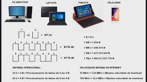3.1.2 Byte
O byte é composto por 8 (oito) bits, e é o necessário para representar qualquer caractere (letras, números, sinais de pontuação). Então, para representar a letra "a", por exemplo, é necessário 1 byte, ou seja, 8 bits. Se um byte tem oito bits, existem 256 combinações possíveis de bytes.
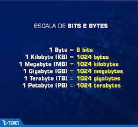